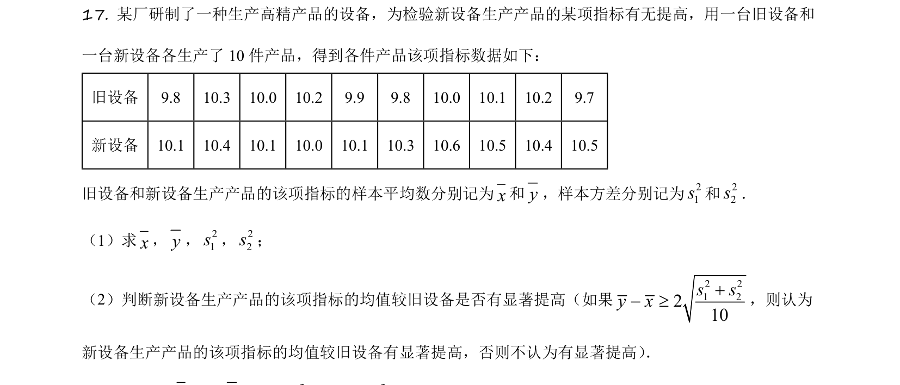
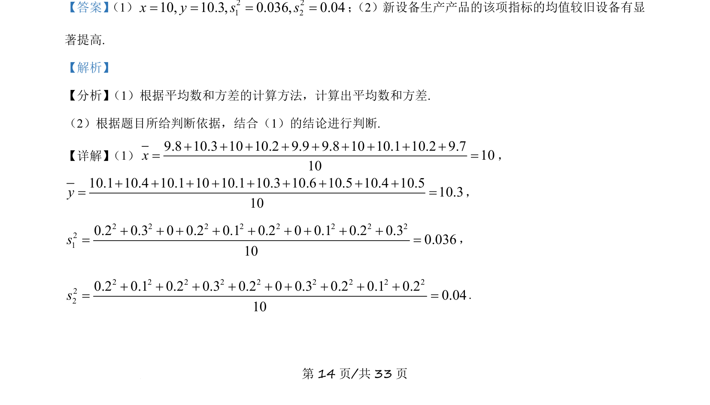
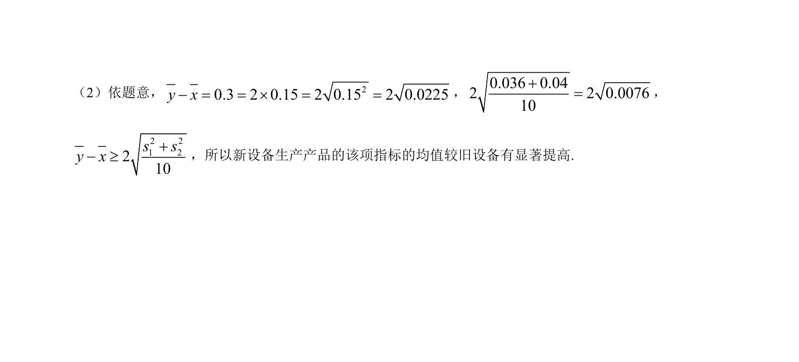

考点：平均数计算 方差计算 显著性检验

本题给出新旧设备各10件产品的指标数据，要求计算样本平均数、方差，并依据给定标准判断新设备均值是否有显著提高。


📄 原 PDF 第 14 页：
素材/真题/吉林/2008-2024·（吉林）数学高考真题/2021年高考数学试卷（理）（全国乙卷）（新课标Ⅰ）（解析卷）.pdf
【答案】 （1） 2 21 210, 10.3, 0.036, 0.04x y s s= = = =； （2）新设备生产产品的该项指标的均值较旧设备有显 著提高. 【解析】 【分析】 （1）根据平均数和方差的计算方法，计算出平均数和方差. （2）根据题目所给判断依据，结合（1）的结论进行判断. 【详解】 （1）9.8 10.3 10 10.2 9.9 9.8 10 10.1 10.2 9.71010x+ + + + + + + + += =， 10.1 10.4 10.1 10 10.1 10.3 10.6 10.5 10.4 10.510.310y+ + + + + + + + += =， 2 2 2 2 2 2 2 2210.2 0.3 0 0.2 0.1 0.2 0 0.1 0.2 0.30.03610s+ + + + + + + + += =， 2 2 2 2 2 2 2 2 2220.2 0.1 0.2 0.3 0.2 0 0.3 0.2 0.1 0.20.0410s+ + + + + + + + += =.